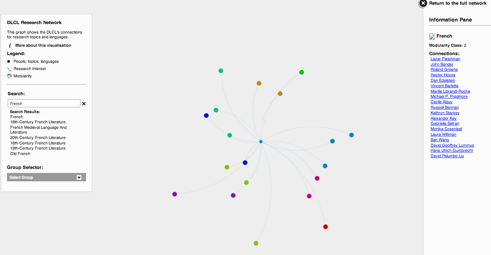
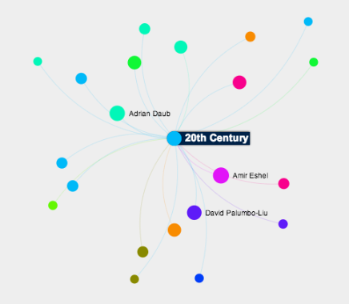
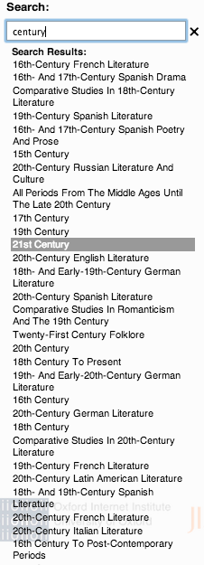

Introduction
Recently, Gabriella Safran, the current chair of the
Division of Literatures, Cultures, and Languages (DLCL), asked me to generate network graphs of the DLCL faculty in advance of an all-faculty retreat at which the agenda was to center around how the DLCL is structured and how well it works for faculty. We developed a series of survey questions that cover research, teaching, collaboration, and service, which I turned into a Google Form so that faculty could fill out a simple web form to provide me with a spreadsheet of data. The questions included things like "What are your primary research topics?" and "With whom have you co-taught?" The answers gave me to raw data necessary to begin building networks. In some cases, faculty are connected because they work directly together either in teaching or research (e.g., reading each other's drafts). In other cases, faculty are connected because they share a research interest or teach the same time period or genre. I divided the questions into groups, titled "Research", "Collaboration", "Structure", "Teaching", and "Teaching Collaboration", as a way to see different facets of the faculty's relationships. I then created this web page to allow exploration of these networks. The data are not complete as not everyone has completed the survey yet, but I will continue to update the networks as more results come in. For suggestions on how to use this tool, read on. If you would like read about the technologies I used to build this tool,
see this companion post.
Potential Uses
Network graphs are beautiful, but can be confusing, especially for someone without experience exploring them. To help orient visitors to the site, then, here are a few ways one might use these visualizations.

Prospective Graduate Students
A prospective graduate student interested in the DLCL might look at the "Research" network to find languages or research topics covered by our faculty. For example, a prospective student of French literature could search for "French" (one of the DLCL's most spoken languages) and discover a list of faculty members who do research in that language. Any of these people might be faculty with whom the prospective graduate student would work. Certainly, though, language alone is not enough. Clicking on any name in the information pane that appears on the right pulls up their research languages and topics (a slightly modified version of the MLA's divisions). From there, the prospective student could click on a research topic to see with whom else in the DLCL s/he might work. This tool allows one to discover which faculty share one's own research interests and, thus, what level of mentoring on these topics one might find as a graduate student here.

Undergraduate Students
Undergraduates may be more interested in finding who teaches what genres, time periods, or topics as they decide which courses they would like to take. For example, a student who wants to study poetry or 20th-century literature could easily find a list of faculty who teach that genre or that time period. From there, s/he might look at the course offerings for the next quarter to see which of those faculty are offering courses. Or, a potential Spanish major might look at the "All" network to see which faculty cover that language.
Faculty
The DLCL chair could use these graphs to see what collaborations occur in the DLCL, where connections exist that can be supported, or where connections do not exist that might be beneficial to the intellectual life of the DLCL. Faculty might also use these networks to identify potential readers of the drafts, co-teachers, guest lecturers, or interest groups. One could also explore these networks to determine if one's interests and connections are accurately represented. If not, I can always revise them with new data.
Reading and Using the Graphs
Terminology
These visualizations are known as network graphs, which are made up of nodes and edges. The nodes are, simply, the objects in a graph. In this case, they include people, departments, time periods, genres, topics, and other things. Edges are the connections between nodes, typically visualized as a line between two nodes.
Color
One of the first things many people notice when they see these graphs are the colors, which add to the visual appeal and convey some information about the structure of the network. The colors indicate different communities and are determined by an algorithm to detect network modularity. Because these groups, however, arise from the structure of the network rather than things like departmental affiliation (though such groups may show up as communities anyway), the groups lack names and, at times, can seem arbitrary when one views the list of members.
Size
In most cases, I have resized the nodes that indicate faculty so that they are large enough to stand out from the other types of nodes. In the case of networks that only contain faculty, I have resized the nodes based on how many connections each one has (a measure called degree). This choice allows viewers to easily spot faculty and other high-value nodes. For the "Structure" network, I made departments larger yet, so that they are easier to spot.

Search
On the left of each graph is a box containing the graph title, legend, more information, and a search field. Searching for things in the graph is easiest using this interface. If you search on only a few letters, it will provide a list of potential matches. For example, typing in "century" will pull up all a long list of time periods from which to choose.
Ego Networks
Clicking on any node in any graph will show that node's "ego network", which is simply all the nodes to which the clicked node connects.
Limitations
These graphs are not comprehensive. Although I currently have data for more than half of the faculty and am continuing to gather more, those who have yet to complete the survey do not appear anywhere in the network. I will be adding basic information about these people (departments, interests, etc.) that can be culled from their profile pages on the DLCL website, but this information will still not be as detailed as that retrieved from the survey results.